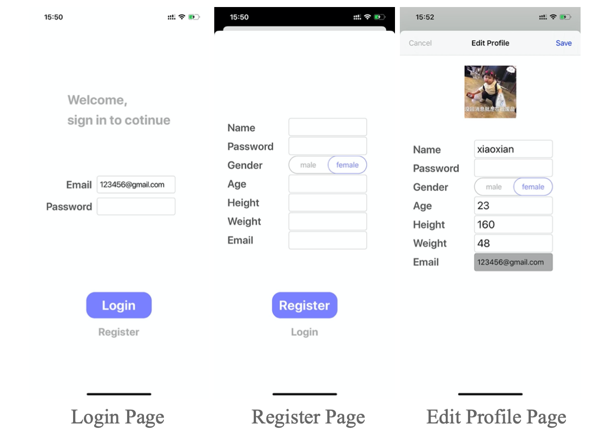
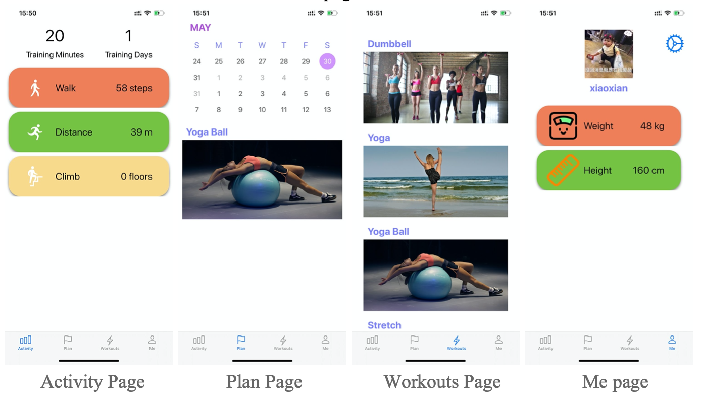

The Login, Register, and Edit Profile page are shown below. Registration requires name, password, gender, age, weight, height, and email. Login asks for a valid registered email and the correct password. In the Edit Profile page, users are allowed to edit all information except for email. Users can upload a picture from iPhone’s gallery or take a picture as their profile pictures.
 Login, Register, and Edit Profile page
ARCoach can be divided into 4 major parts, namely Activity, Plan, Workouts, and Me. Below are the screenshots of each tab bar page.
 Activity, Plan, Workouts, and Me page
In the Activity page, ARCoach would access health data from iPhone through HealthKit and display them. It also would grab history data of training minutes and training days from Firebase.
In the Plan page, JTAppleCalendar is displayed. It can be scrolled to select the date. In the future, ARCoach would link the date and training plan together(TO-DO).
In the Activity page, instead of just playing a video that instructs users how to do the exercise, ARCoach would combine AR and VR technology, analyze the motion based on motion tracking results in order to give feedback to users. The algorithm would make use of important joints of the body, such as right hand, right shoulder, head, hip, right foot joints. By analyzing the relationship between the joints, to determine whether the users have done the workouts correctly(TO-DO).
In the Me page, it records the personal information related to sport and display the profile picture and user’s name. The setting button on the top right would direct the user to the Edit Profile page.
Read next: Story’s features.